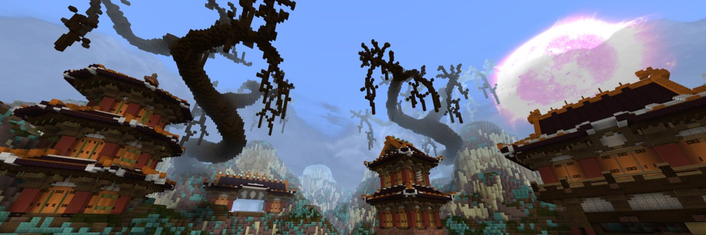

THE HELIOS NETWORK
The Helios Network was a Minecraft: Bedrock Edition server network originally created by Ben Petrillo (Eerie6560) in late May 2020. Originally branching off a previous server network made with a friend, known as EndCraft, the Helios Network was primarily focused on practice PVP.

HELLO!
This page is in development. Check back later!